Inverno
- Dicembre
- Gennaio
- Febbraio
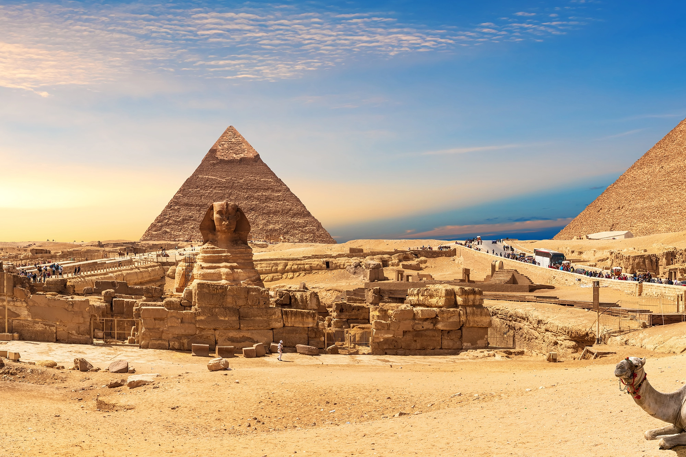
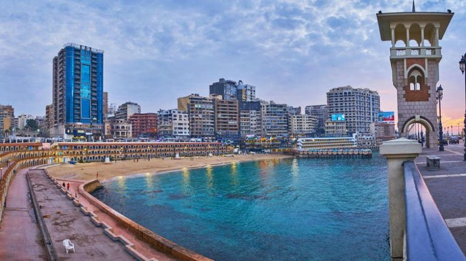
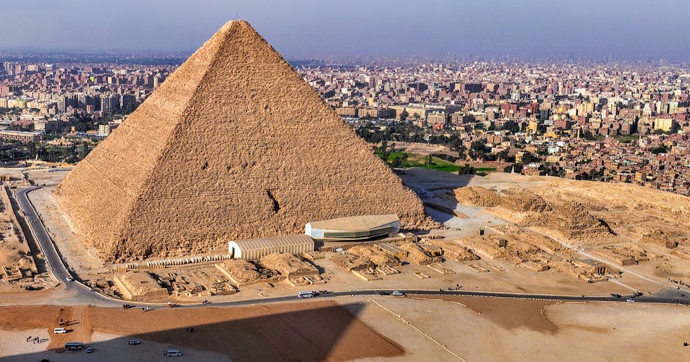
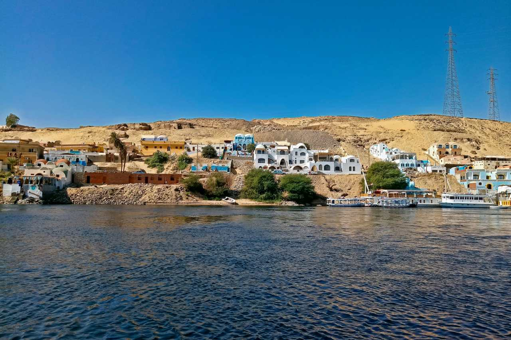
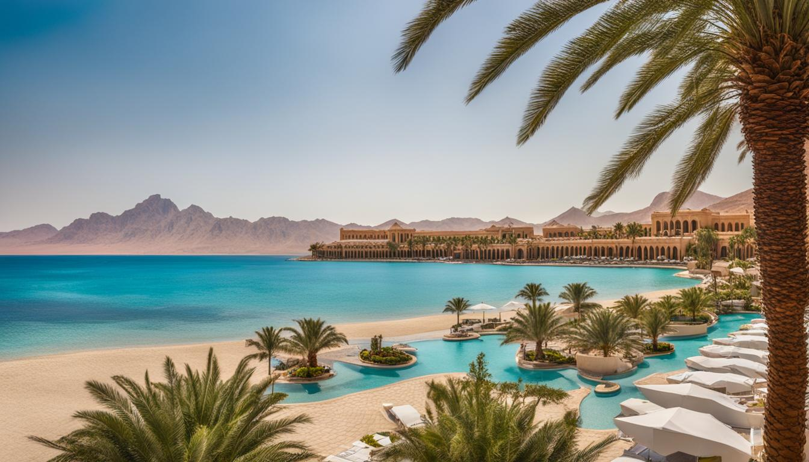
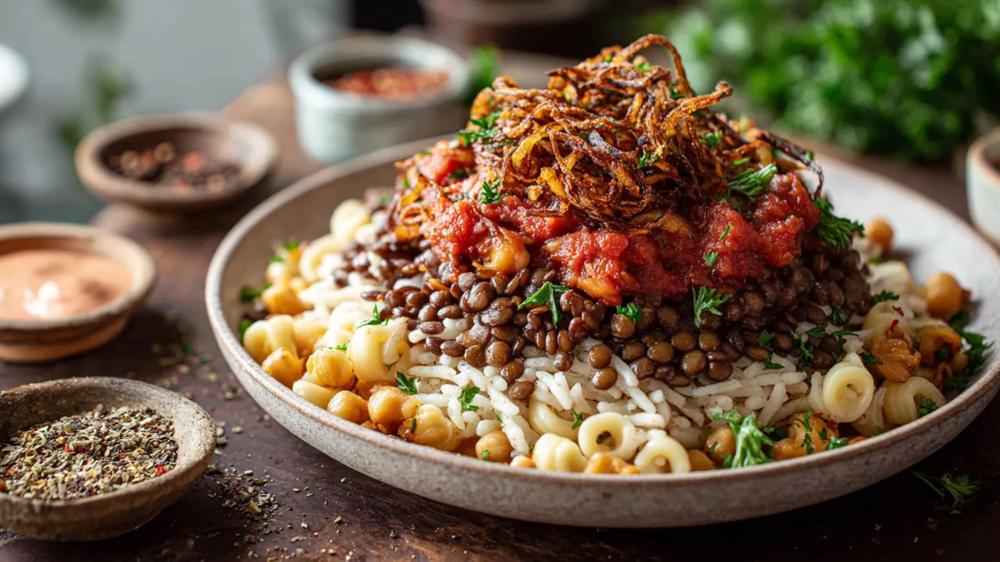
Piatto popolare composto da riso, lenticchie e pasta, condito con salsa di pomodoro e cipolle croccanti.
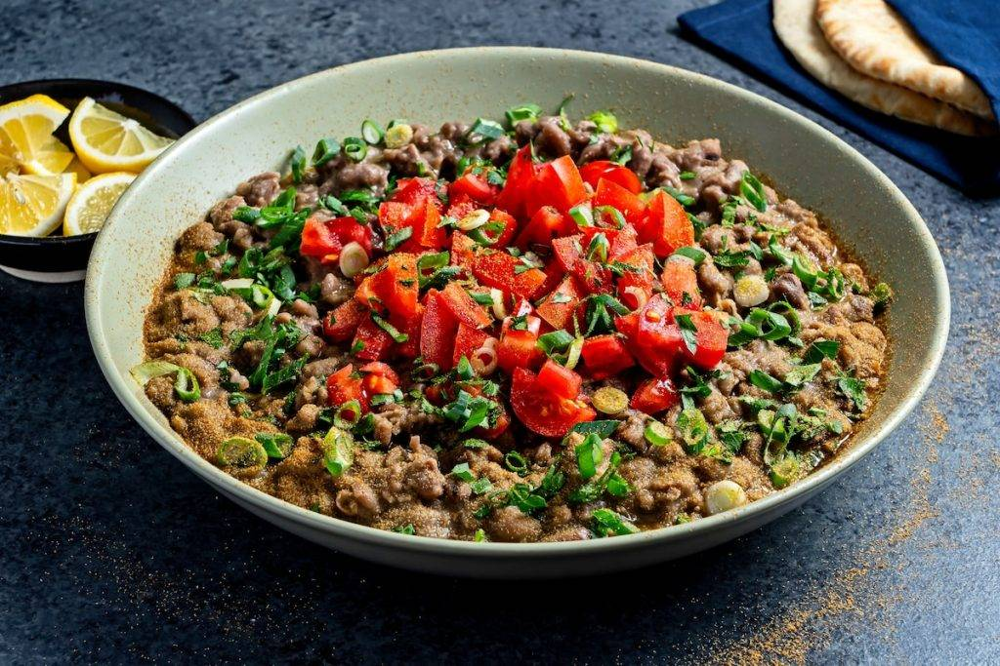
Fave cotte lentamente e condite con olio, limone e spezie, spesso servite a colazione con pane.
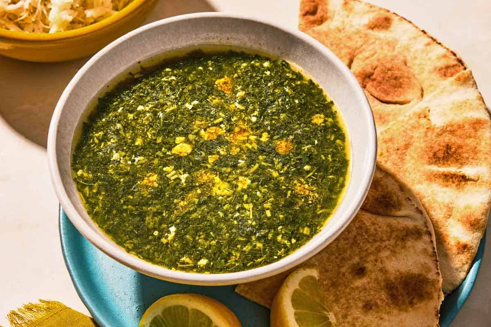
Zuppa verde preparata con foglie di molokhia tritate e brodo, servita spesso con riso o pane.
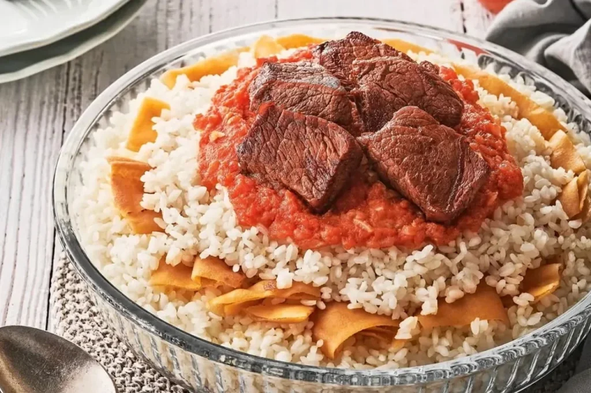
Preparazione a strati con pane tostato, riso e carne, condita con brodo e salsa all'aglio e aceto.
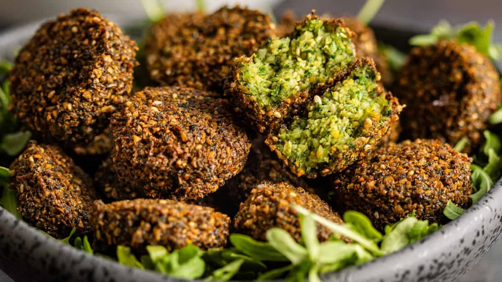
Frittelle speziate simili ai falafel, preparate tradizionalmente con fave e servite spesso in un panino.
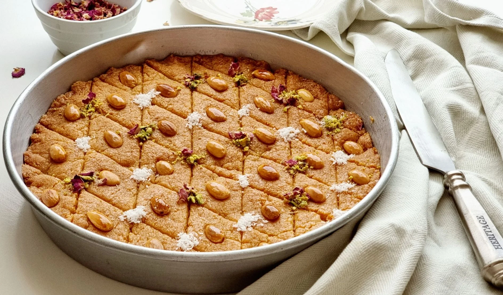
Dolce di semolino imbevuto di sciroppo, talvolta aromatizzato con cocco e decorato con mandorle.